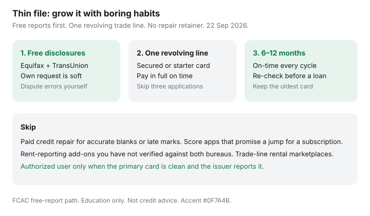

Personal Finance · Canada
Build Credit in Canada on a Thin File Without Paid Credit-Builder Gimmicks
A thin Canadian credit file is not a moral failure. It is a short or sparse report at Equifax, TransUnion, or both: few trade lines, little revolving history, or accounts that are too new to tell a lender anything useful. Newcomers, adults who paid cash for decades, and people who only ever carried a student loan often buy a “credit builder” subscription or a repair pitch that cannot invent a history the bureaus will invent for them. The boring path still works: confirm the free files, open one revolving account you can pay in full, report only through legitimate channels, and wait out six to twelve months of on-time habits. Date-stamped against FCAC guidance used 22 Sep 2026.
How to order both free disclosures and dispute errors yourself is the free Equifax and TransUnion guide. How to keep reported balances sensible once the file exists is utilization without closing cards. This page is the thin-file middle: growth without gimmicks.
Disclosure: Education only. Not credit, lending, or immigration advice. Banking and tax-software products are offer types — Saving Optimizer may later add partner links and does not currently claim partnerships. We do not recommend credit-repair firms, payday loans, debt-settlement offers, or paid “score boost” subscriptions. Confirm live product terms before you apply.
Key takeaways
- A thin file means little reportable history — not a mysterious score you must buy. Order both free bureau disclosures first.
- One secured or starter revolving account you pay in full beats a stack of applications. Multiple hard inquiries in a short window tell the wrong story.
- Authorized-user status can help only when the primary card is paid on time and the issuer reports the supplementary card the way you expect.
- Rent and utilities rarely report automatically in Canada. Treat optional reporting services as optional, not as a score guarantee.
- Skip paid credit repair for accurate blanks or late marks. Grow the file for 6–12 months with on-time payments, then re-check before a mortgage or car loan.
What a thin file means at Equifax/TransUnion Canada
Canadian lenders pull Equifax, TransUnion, or both. The files are not twins. A thin file on one bureau can look slightly thicker on the other if only one issuer reports there. FCAC says you can access your credit report online for free from both bureaus, and that your own request does not change the score. Equifax’s score is described as free online; Québec residents can also see a TransUnion score on the consumer disclosure under provincial credit-assessment rules. Phone numbers FCAC lists: Equifax 1-800-465-7166, TransUnion 1-800-663-9980. Walk-up counters in Toronto and Burlington closed 1 July 2026; online, phone, and mail remain.
On the disclosure, look for: open revolving accounts, instalment loans, age of oldest account, recent inquiries, and any collection or “account never opened.” A file with one closed cellphone and a paid-off student loan is thin for a mortgage underwriter even if the personal story is clean. A file with no Canadian trade lines at all is thinner still. Neither is fixed by paying a firm to “optimize” blanks. Blanks grow when issuers report activity.

Secured cards and credit-builder products vs gimmicks
A secured credit card deposits cash with the issuer as collateral and reports like a revolving account when you use it and pay it. That can be a legitimate first Canadian trade line if you understand the deposit, the limit, the annual fee if any, and how to graduate to an unsecured card later. A low-limit unsecured starter card from a bank or credit union you already bank with can play the same role without a security deposit. Both only help if the balance reports and the payment is on time.
Gimmicks look different. Upfront fees to “build credit” without a real revolving account. Apps that sell monitoring while promising a score jump. Offers that bundle a high-cost instalment loan you do not need. Credit-builder loans can exist as ordinary instalment products at some credit unions — read the APR, the reporting promise, and whether you already have a cheaper way to create a trade line. Do not open three products in one month “to thicken the file.” Hard inquiries pile up; unused cards still need discipline.
| Tool | What it can do | What to verify |
|---|---|---|
| Secured card | Creates a revolving trade line when used and paid | Deposit, fee, graduation path, which bureau is reported |
| Starter unsecured card | Same reporting role without a security deposit | Limit, annual fee, hard inquiry, temptation to revolve |
| Authorized user | May inherit primary history if the issuer reports it | Primary payment habits; whether your SIN is on the file |
| Paid “repair” or score app | Usually monitoring or dispute paperwork you can do free | Whether they claim to erase accurate negatives — skip those |
Become an authorized user carefully
A spouse or parent with a long, clean primary card can sometimes add you as an authorized or supplementary user. Some issuers report that history to the bureaus; some report only the primary. Ask the issuer which bureaus see the supplementary card and whether a late payment on the primary lands on your file. If the primary card carries a high balance or misses due dates, you may inherit the problem. Authorized-user status is not a substitute for your own revolving account when the household can manage one small limit responsibly.
Do not pay a stranger to “rent” you a trade line. That marketplace pitch is a fraud and identity risk, not a FCAC path. Keep the primary cardholder’s consent written, and remove the supplementary card when the relationship or the risk changes.
Report rent/utilities only via legitimate paths (high level)
Canadian renters often assume the landlord reports like a U.S. apartment chain. Most do not. Utilities and telecom may report only when an account goes to collections — which is the opposite of helpful. Optional rent-reporting or bill-reporting services appear in the market from time to time. Before you pay:
- Confirm which bureau receives the data, and whether both Equifax and TransUnion are covered.
- Confirm the landlord or issuer actually participates, not just that an app exists.
- Read the fee, the cancellation, and whether late rent would also report.
- Treat any promised score increase as marketing, not a contract.
Paying rent on time still matters for your landlord and your cashflow. It is not automatically a credit-file lever in Canada. Collections for unpaid utilities are a file problem you prevent by paying, not by buying a reporting add-on after the fact.
Habits that grow a file in 6–12 months
- Month 0. Order both free disclosures. Note inquiries, collections, and any account you do not recognize. Dispute errors yourself.
- Month 0–1. Open at most one revolving account you can pay in full. Prefer an issuer you already bank with if approval is realistic.
- Every due date. Autopay at least the minimum from a funded chequing account. Better: autopay the statement balance so interest never starts.
- Before each statement. If utilization is the next problem, pay the reported balance down early — see the utilization guide. Thin files still suffer from maxed small limits.
- Month 6. Pull one bureau. Confirm the trade line posts. Do not open a second card yet unless you have a specific reason.
- Month 12. Pull both bureaus before a mortgage, car loan, or large line of credit. Keep the oldest useful card open.
Installment credit (a car loan you can afford) can diversify a file, but financing something you do not need just to “add a trade line” is expensive theatre. Payment history dominates; a new loan you strain to pay is the wrong thickener.
What to skip: paid “credit repair”
FCAC’s long-standing warning still holds: accurate negative information stays for the period provincial law allows, often on the order of six or seven years depending on the item and the province. A firm that promises to delete accurate late payments is selling something the bureaus say they will not do. TransUnion’s dispute materials say a paid repair company gets the same investigation outcome you get yourself. Equifax and TransUnion disputes of inaccurate items are free.
Thin history is not a negative mark to erase. It is an absence. Absence is cured by time and reported activity, not by a retainer. If minimum payments already crowd out rent, talk to a non-profit credit counselling society accredited in your province — not a settlement pitch that wants fees before the math. For payoff order once balances exist, use snowball versus avalanche.
Sources & date stamps
- FCAC, Getting your credit report and credit score — free Equifax and TransUnion access; own request does not affect the score (used 22 Sep 2026).
- FCAC, Checking your credit report for errors — free disputes; repair-firm caution on accurate negatives (orientation used 22 Sep 2026).
- Equifax Canada / TransUnion Canada — free disclosure paths; walk-up closures 1 July 2026; disputes free (consistent with the free-report guide, used 22 Sep 2026).
Frequently asked questions
What is a thin credit file in Canada?
A thin file usually means Equifax or TransUnion has few trade lines, a short history, or mostly instalment credit with little revolving activity. Newcomers, recent graduates, and adults who paid cash for years often land here. FCAC’s free-report path is how you confirm what each bureau already holds.
Do I need a paid credit-builder product?
Not as a default. A secured card you understand, or becoming an authorized user on a well-managed primary card, can start a file. Products that charge upfront fees to “build credit” or erase accurate history are the pitch to skip. Disputes of errors are free at both bureaus.
Can rent report to Equifax or TransUnion automatically?
Usually not. Most Canadian landlords do not report rent the way card issuers report balances. Some optional services claim to report rent or utilities; read who files the data, what it costs, and whether both bureaus receive it. Do not pay a firm that promises a score jump for a subscription.
How long until a thin file looks usable?
Six to twelve months of on-time revolving activity is a common planning window, not a guarantee. Age of accounts and a mix of credit still take longer. Pull free disclosures twice a year and before any large application.
Should I hire a credit-repair company?
No for accurate late payments or thin history. TransUnion has said a paid repair firm gets the same investigation result you would get yourself. Accurate negatives stay for the provincial period. Fix errors yourself; grow the file with boring habits.